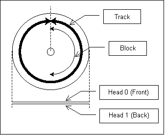
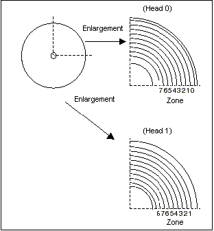
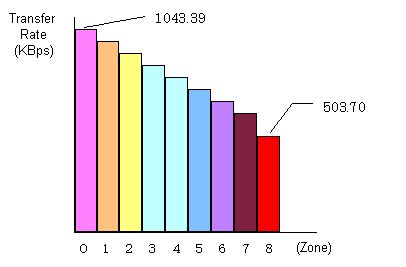

Data can be written to both the front and back sides of the disk, and the disk is structured such that the front side of the disk is called Head 0 and the back side is called Head 1. One full circle around the disk is called a track and one half circle is called a block. On the 64DD, the smallest access unit is one block.

Each side of the disk is divided into eight concentric circle-shaped groups called zones. The size of a block varies, depending on the position of the zone it's located on. For high-density data storage, the 64DD disk is designed such that the outermost circle of the disk has the largest size of 19720 bytes, and the innermost circle has the smallest size of 9520 bytes. In addition, the disk is formatted so that each block in a given zone has the same size.
Note: Since the block size differs depending on its location, it might be difficult to handle with the program. However, the disk can be easily accessed since its file system can be manipulated using the MFS library. Because of this there is no need to know information such as block size except when it is generated by the file system itself.
The following table gives the block size and the number of tracks in each zone:
| Zone number | Head 0 | Head 1 | ||
| Block size |
Number of tracks |
Block size |
Number of tracks |
|
| Zone 0 | 19720 bytes | 134 | - | - |
| Zone 1 | 18360 bytes | 146 | 18360 bytes | 146 |
| Zone 2 | 17680 bytes | 137 | 17680 bytes | 146 |
| Zone 3 | 16320 bytes | 137 | 16320 bytes | 137 |
| Zone 4 | 14960 bytes | 137 | 14960 bytes | 137 |
| Zone 5 | 13600 bytes | 137 | 13600 bytes | 137 |
| Zone 6 | 12240 bytes | 137 | 12240 bytes | 137 |
| Zone 7 | 10880 bytes | 102 | 10880 bytes | 137 |
| Zone 8 | - | - | 9520 bytes | 102 |
When computing the capacity of a zone on one side of the disk, the following expressions are used:
Number of blocks in the tracks = (the number of tracks) x 2
Capacity of the zone = (the block size) x (the number of blocks in the tracks)
As explained above, the smallest unit of access on the 64DD disk is a block, and one track is composed of two blocks.

| Rotation speed: | About 25.2ms for one revolution |
| Transfer rate for one block: | About 12.6ms |
Since the disk rotates at a constant speed, the per-byte data transfer rate is faster toward the outer perimeter of the disk. This is because the size of one block varies depending on the position of its zone, and data is formatted at a higher density toward the outer perimeter of the disk. And, since the storage density toward the inner part of the disk is set lower, the data transfer rate toward the center is slower.
Because the greatest amount of data can be stored in the blocks on the outermost circles of the disk, and because data is also transferred at the highest speeds there, we recommend creating your programs so that the most important data is located in the outer parts of the disk.

Every disk has tracks reserved for the system area. The following information is written in the system area:
The fact that the 64DD disk is a special writable disk and not simply a read-only medium does not mean that the entire disk can be written to. There are seven disk types, differing according to the relative sizes of the disk that are writable (RAM area) and read-only (ROM area). For more details, see Disk Types below.
When power is supplied to the 64DD it displays the IPL, which is the program for booting a game from the 64DD disk. If the 64DD disk is inserted at this time, several blocks starting from the first block are read and stored in certain addresses in RDRAM. The IPL size specifies how many blocks should be read.
The load address specifies where in RDRAM the program and data read from the disk should be stored.
The disk ID identifies the number of the 64DD disk. 32 bytes of ID information are allocated to each disk. The programmer can use this information to check whether or not the MFS is used as well as to check whether an incorrect disk has been inserted during a game or to identify disks in 2-disk games. The ID includes information submitted at production time, such as plant line number, time and date of manufacture, etc.
The writable area on the 64DD disk is called the RAM area, and the read-only area where data cannot be written is called the ROM area.
| Entire disk area: | 64.45 Mbytes |
| RAM area: | 0 - 38.44 Mbytes |
| The ROM area: | 26.01 - 64.45 Mbytes |
There are 7 disk types, 0 - 7, corresponding to the relative sizes of the RAM area and the ROM area on the disk. The disk type of a particular disk is determined by the size of the writable area needed by the programmer. The relationship between the disk type and the ROM and RAM areas is explained in the following table:
| Disk type | ROM area | RAM area |
| Type 0 | Zone 0 - 2 (26,014,080 bytes) |
Zone 3 - 8 (38,444,480 bytes) |
| Type 1 | Zone 0 - 3 (34,957,440 bytes) |
Zone 4 - 8 (29,501,120 bytes) |
| Type 2 | Zone 0 - 4 (43,155,520 bytes) |
Zone 5 - 8 (21,303,040 bytes) |
| Type 3 | Zone 0 - 5 (50,608,320 bytes) |
Zone 6 - 8 (13,850,240 bytes) |
| Type 4 | Zone 0 - 6 (57,315,840 bytes) |
Zone 7 - 8 (7,142,720 bytes) |
| Type 5 | Zone 0 - 7 (62,516,480 bytes) |
Zone 8 (1,942,080 bytes) |
| Type 6 | All areas (64,458,560 bytes) |
None |
The 64DD library accesses blocks on the disk using a series of consecutive numbers called the LBA (Logical Block Address). The LBAs on one disk range from 0 - 4291, and the numbers are allocated according to the following rules:
Nintendo® Confidential
Copyright © 1999
Nintendo of America Inc. All Rights Reserved
Nintendo and N64 are registered trademarks of Nintendo
Last Updated March, 1999